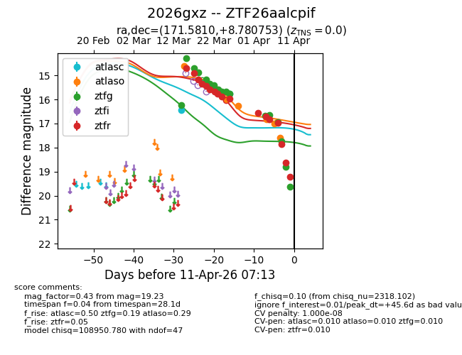
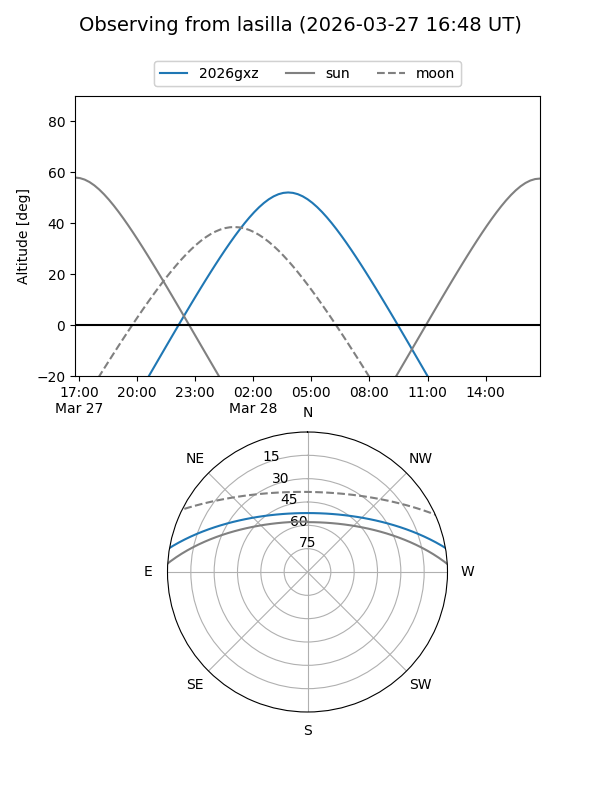
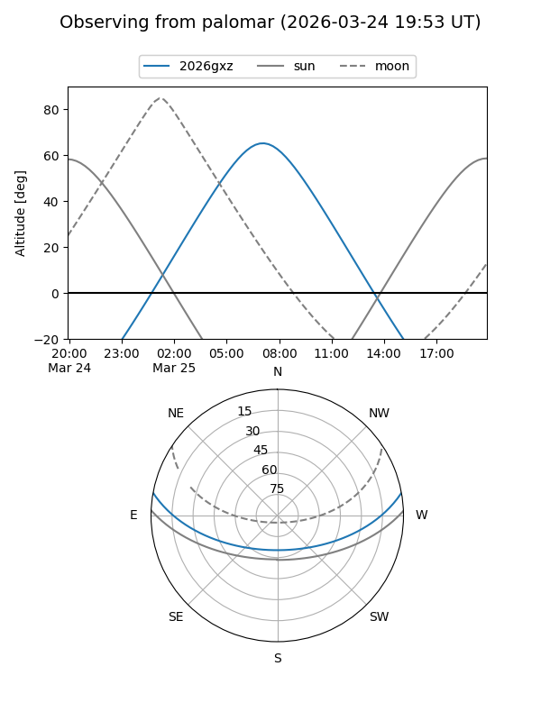
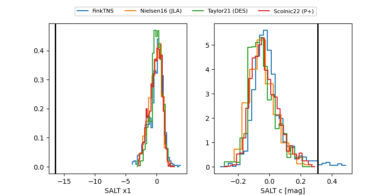

2026gxz
Target 2026gxz at 2026-04-11 07:23
Aliases and brokers:
FINK: link
Lasair: link
ALeRCE: link
TNS: link
YSE: link
alt names
ZTF26aalcpif (ztf,fink_ztf)
2026gxz (tns,yse)
Coordinates:
equatorial (ra, dec) = 171.5810,+8.78075
equatorial (HMS+DMS) = 11:26:19.44,+08:46:50.71
galactic (l, b) = (251.3121,+62.77331)
Flags:
likely cv
Photometry:
last atlasc=15.78, atlaso=17.60, ztfg=19.64, ztfr=19.23
3 atlasc, 8 atlaso, 17 ztfg, 17 ztfr detections
Lightcurve

Visibility


Additional plots
